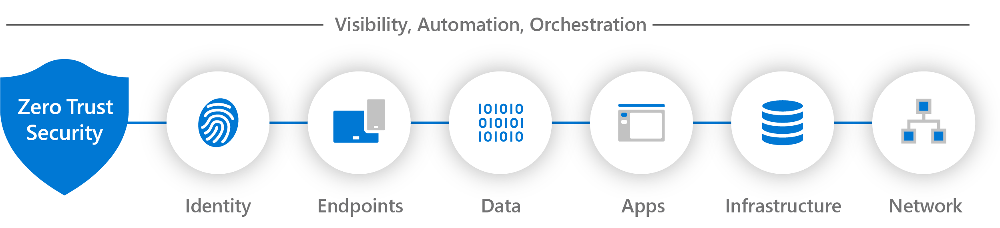

Explore our comprehensive range of cybersecurity and IT advisory services designed to safeguard and enhance your digital assets.
Experience dedicated cybersecurity guidance from an experienced advisor committed to safeguarding your digital assets. Benefit from expert insights and tailored recommendations that address unique needs. From comprehensive threat assessments to strategic risk mitigation, gain insights necessary to fortify digital defenses. Services are aligned with industry standards, including NIST, Zero Trust, and encompass Cloud Security (Azure) and On-Premises security.
Collaborate with a seasoned cybersecurity architect to design and implement robust security frameworks for digital infrastructure. Prioritize proactive defense and engineer solutions that protect against emerging threats while maintaining seamless functionality. Fortify digital assets through meticulous design and execution, incorporating latest industry standards like NIST, Zero Trust, Cloud Security (Azure), and On-Premises security.
Navigate the dynamic IT landscape with the guidance of an experienced advisor. Receive tailored recommendations to optimize technology investments. Whether streamlining operations, adopting innovative solutions, planning for future growth, or delving into Cloud integration, Security enhancements, Virtualization strategies, and Operating System optimization, you'll be equipped with a personalized roadmap to achieve your goals. Gain confidence with expert insights and a holistic approach to modern IT challenges.
At GNU IT, we bring over 15 years of unparalleled expertise to the realm of cybersecurity and IT infrastructure. With a dynamic background spanning information security, cloud solutions, virtualization, networks, and data centers, our solutions are crafted by a seasoned professional who's been at the forefront of the field.
Our experience extends beyond conventional boundaries, encompassing a deep understanding of industry standards such as CIS, NIST, MITRE, and ISO 27001. This mastery allows us to not only create security guidelines but also make astute decisions and engineer powerful security solutions. We're not just security experts – we're Zero Trust evangelists, armed with a comprehensive understanding of network security, cloud fortifications (including Azure and Microsoft 365 security suite), and cutting-edge vulnerability management tools.
Our communication prowess allows us to articulate complex ideas with clarity, while our detail-oriented approach fuels our solutions' precision. Fueled by an unquenchable thirst for innovation, we're dedicated to uncovering groundbreaking solutions that not only slash costs and enhance quality but also fortify security.

Feel free to reach out to us for inquiries and consultations.
Email: contact@gnu-it.com